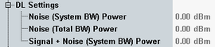

DL Settings
This branch displays noise power values, calculated from the downlink power and the fading module AWGN settings.
For multi-carrier scenarios, all values are available per carrier.

Noise information
Displays the noise power on the downlink carrier, i.e. within the channel bandwidth.
Remote command:Displays the total noise power, within and outside of the downlink carrier.
Remote command:Displays the total power (signal + noise) on the downlink carrier, i.e. within the channel bandwidth.
Remote command: